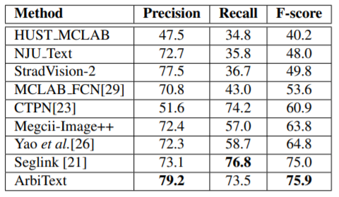

| Status: | MS Student |
| Program: | Computer Science and Engineering |
| School: | Tandon School of Engineering, New York University |
| RA Period: | From 2018-09 to 2019-06 |
| I'm a Ph.D. student at New York University. Before that, I was a research assistant in NYU Multimedia and Visual Computing Lab, advised by Professor Yi Fang. I am broadly interested in 3D Computer Vision, Pattern Recognition and Deep Learning. |
Arbitrary-oriented text detection in the wild is a very challenging task, due to the aspect ratio, scale, orientation, and illumination variations. In this project, we propose a novel method, namely Arbitrary-oriented Text (or ArbText for short) detector, for efficient text detection in unconstrained natural scene images. Specifically, we first adopt the circle anchors rather than the rectangular ones to represent bounding boxes, which is more robust to orientation variations. Subsequently, we incorporate a pyramid pooling module into the Single Shot MultiBox Detector framework, in order to simultaneously explore the local and global visual information, which can therefore generate more confidential detection results. Experiments on established scene-text datasets, such as the ICDAR 2015 and MSRA-TD500 datasets, have demonstrated the superior performance of the proposed method, compared to the state-of-the-art approaches.
Figure 1: The Framework of the Proposed Method.
In this project, we propose a novel method, namely Arbitrary-oriented Text (or ArbText for short) detector, for efficient text detection in unconstrained natural scene images. As displayed in Figure.1, given an input image with a size of 384×384, VGG-16 base network outputs the first feature map from conv4 3 layer. More feature maps with cascading sizes are extracted from extra layers following the first feature map. The first feature map is also used to produce different sub-region representations through the Pyramid Pooling Module. These representation layers are then concatenate feature maps with same size to output the final feature maps. Finally, those maps are fed into a convolution layer to get the final.
Table 1: Comparison results of various methods on the MSRA-TD500 dataset.
In this section, in order to evaluate the performance of the proposed method, we ran experiments on two benchmark datasets: the ICDAR 2015 dataset and the MSRA-TD500(TD500) dataset. Figure.2 shows several detection results taken from the testing dataset of ICDAR 2015. Our proposed method ArbiText can distinguish and localize all kinds of scene text in noisy backgrounds. As shown in Table 1, we list the results of our model along with other state-of-art object and text detection methods. The results were obtained from the original papers. The best result of this dataset was obtained by Seglink which achieved a F-measure score of 75.0%. However, our model obtained a score of 75.9%. The improvement comes from the high precision rate we obtained, which outperforms the second highest model by 6.1%.
Figure 2: Results of ArtTex on the ICDAR2015 dataset.